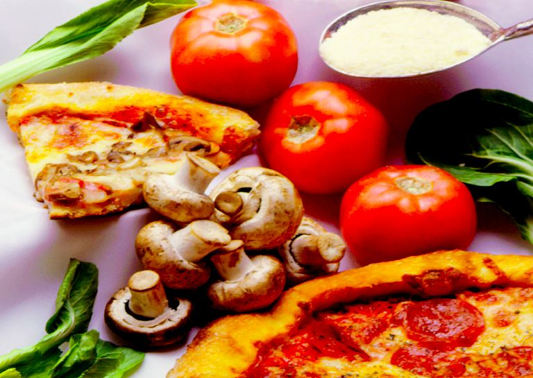

I Say Tomato, You Say Cancer Prevention
A saucy new medicine
Shalin Shah
Fall 2005

Pizza’s reputation as an unhealthy vice may soon be reformed by
biomedical researchers; new research suggests that the primer of every
good pizza, tomato sauce, contains an important antioxidant known as
lycopene, which may have cancer-preventative properties.
Lycopene has recently been correlated with the
prevention of many degenerative disorders and has thus attracted the
meticulous scrutiny of the biomedical research community. Its effects
are believed to target the hazardous byproducts of routine metabolic
processes: free-radicals. Free radicals have one or more free electrons
and are thus unstable and highly reactive. In an attempt to stabilize
their own electron configuration, free radicals may beget even more
free radicals by stealing neighboring electrons. “No process is
perfect,” asserts Bruce Ames, PhD, graduate professor of molecular
biology at the University of California, Berkeley (UC Berkeley). “The
mitochondria, which are the power plants of cells, pull electrons from
fats and carbohydrates, forming radical oxygen,” he explains. These
compounds are extremely reactive and tend to bump into cellular
components, such as DNA, leading to cell damage.
This process, better known as oxidative stress, is
ultimately responsible for the accumulation of free-radicals in the
body. Many phytochemicals, including lycopene, that are found in fruits
and vegetables act as antioxidants to relieve the oxidative stress
exerted on cells. “They help destroy radicals, reducing their numbers
in the body,” says Dr. Ames, thereby helping the body avert many
harmful disorders.
Raw tomatoes contain an inactive form of lycopene.
Once tomatoes are processed, heated, and mixed with oils, the lycopene
molecules undergo a conformational change known as a cis-trans
isomerization. Steven Pedersen, PhD, a professor of organic chemistry
at UC Berkeley, stresses that “lycopene processing can make it much
more potent for humans.” The modification of lycopene during tomato
processing increases the bioavailability of the substance upon
ingestion. The modified lycopene in foods like tomato sauce and tomato
juice is in a form more readily utilized by the body.
Other antioxidants are readily available for
consumption, but what sets lycopene apart is its distinct
cancer-preventing quality. An observational study conducted in 2004 by
Arnon Blum, MD, of the Cardiology Branch National Heart, Lung, and
Blood Institute in Bethesda, Israel, found that people living in and
around the Mediterranean region, who had diets rich in foods containing
processed tomatoes appeared to have a lowered rate of various cancers.
Maria Stacewicz-Sapuntzakis, PhD, at the University of Illinois,
Chicago remarks, “In some epidemiological studies, high tomato
consumption [or high levels of lycopene in the blood] was associated
with [a] decreased risk of lung, stomach, colorectal, pancreatic, oral
and pharyngeal, bladder, breast, cervical and ovarian cancer.” The high
amount of modified tomato food products consumed in the region
contributed to the lower rates of these cancers.
In another experiment conducted by Dr. Blum and his
colleagues, 32 patients with acute prostate carcinoma ate tomato
sauce-based pasta dishes for three weeks prior to a radical
prostatectomy, while the control group ate a diet with comparatively
fewer servings of the tomato sauce-containing meals. Prostate tissue
was obtained from each patient at the start of the tomato sauce regimen
and once again just before their prostatectomy. The experimental group
showed a statistically significant decrease in cancer tissue cells.
Furthermore, the men who eventually developed prostate cancer were all
deficient in lycopene.